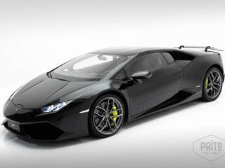

O Aventador LP 750-4 Superveloce toma emprestado ainda uma série de tecnologias vindas do ainda mais raro Lamborghini Veneno, inclusive na mesma receita de diminuição de peso e de aumento de potência do motor, só que por um décimo do preço pedido pelo supercarro de 2013, com apenas três unidades produzidas por 3,1 milhões de euros. O SV tem desempenho até ligeiramente melhor do que desses dois superesportivos exclusivos, vai aos 100 km/h em 2,8 segundos e ultrapassa os 350 km/h de velocidade máxima. Na medida para fazer valer a sigla surgida em 1971 no Miura SV e continuada pelo Diablo SV de 1996 e pelo antecessor Murciélago SV de 2009. A estrutura e carroceria parecem se valer de boa parte da tabela periódica para obter peso mínimo. O chassi é inteiro em fibra de carbono, material que é repetido no capô, spoilers e entradas de ar laterais. O alumínio foi a pedida para o capô dianteiro, para-lamas frontais e portas. Já os para-lamas traseiros e as soleiras das portas são feitos em material composto. As enormes rodas de aros finíssimos estrearam no carro com a mesma missão e até adotaram porcas centrais para diminuir a massa rotante dos parafusos usados normalmente.
Postado por ADERSON DE SENA